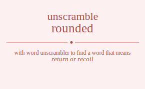

The word found after unscrambling rounded means that return or recoil, contribute, have an effect for good or ill, .

The word found after unscrambling rounded means that return or recoil, contribute, have an effect for good or ill, .
You can also find solutions for different combinations of letters in rounded like rounded roundde rounedd rounedd roundde rounded roudned roudnde roudend roudedn rouddne roudden rouendd rouendd rouednd roueddn rouednd roueddn roudnde roudned rouddne roudden roudend roudedn ronuded ronudde ronuedd ronuedd ronudde ronuded rondued rondude rondeud rondedu ronddue ronddeu roneudd roneudd ronedud roneddu ronedud roneddu rondude rondued ronddue ronddeu rondeud rondedu roduned rodunde roduend roduedn rodudne roduden rodnued rodnude rodneud rodnedu rodndue rodndeu rodeund rodeudn rodenud rodendu rodedun rodednu roddune rodduen roddnue roddneu roddeun roddenu roeundd roeundd roeudnd roeuddn roeudnd roeuddn roenudd roenudd roendud roenddu roendud roenddu roedund roedudn roednud roedndu roeddun roeddnu roedund roedudn roednud roedndu roeddun roeddnu rodunde roduned rodudne roduden roduend roduedn rodnude rodnued rodndue rodndeu rodneud rodnedu roddune rodduen roddnue roddneu roddeun roddenu rodeund rodeudn rodenud rodendu rodedun rodednu ruonded ruondde ruonedd ruonedd ruondde ruonded ruodned ruodnde ruodend ruodedn ruoddne ruodden ruoendd ruoendd ruoednd ruoeddn ruoednd ruoeddn ruodnde ruodned ruoddne ruodden ruodend ruodedn runoded runodde runoedd runoedd runodde runoded rundoed rundode rundeod rundedo runddoe runddeo runeodd runeodd runedod runeddo runedod runeddo rundode rundoed runddoe runddeo rundeod rundedo rudoned rudonde rudoend rudoedn rudodne rudoden rudnoed rudnode rudneod rudnedo rudndoe rudndeo rudeond rudeodn rudenod rudendo rudedon rudedno ruddone ruddoen ruddnoe ruddneo ruddeon ruddeno rueondd rueondd rueodnd rueoddn rueodnd rueoddn ruenodd ruenodd ruendod ruenddo ruendod ruenddo ruedond ruedodn ruednod ruedndo rueddon rueddno ruedond ruedodn ruednod ruedndo rueddon rueddno rudonde rudoned rudodne rudoden rudoend rudoedn rudnode rudnoed rudndoe rudndeo rudneod rudnedo ruddone ruddoen ruddnoe ruddneo ruddeon ruddeno rudeond rudeodn rudenod rudendo rudedon rudedno rnouded rnoudde rnouedd rnouedd rnoudde rnouded rnodued rnodude rnodeud rnodedu rnoddue rnoddeu rnoeudd rnoeudd rnoedud rnoeddu rnoedud rnoeddu rnodude rnodued rnoddue rnoddeu rnodeud rnodedu rnuoded rnuodde rnuoedd rnuoedd rnuodde rnuoded rnudoed rnudode rnudeod rnudedo rnuddoe rnuddeo rnueodd rnueodd rnuedod rnueddo rnuedod rnueddo rnudode rnudoed rnuddoe rnuddeo rnudeod rnudedo rndoued rndoude rndoeud rndoedu rndodue rndodeu rnduoed rnduode rndueod rnduedo rndudoe rndudeo rndeoud rndeodu rndeuod rndeudo rndedou rndeduo rnddoue rnddoeu rndduoe rnddueo rnddeou rnddeuo rneoudd rneoudd rneodud rneoddu rneodud rneoddu rneuodd rneuodd rneudod rneuddo rneudod rneuddo rnedoud rnedodu rneduod rnedudo rneddou rnedduo rnedoud rnedodu rneduod rnedudo rneddou rnedduo rndoude rndoued rndodue rndodeu rndoeud rndoedu rnduode rnduoed rndudoe rndudeo rndueod rnduedo rnddoue rnddoeu rndduoe rnddueo rnddeou rnddeuo rndeoud rndeodu rndeuod rndeudo rndedou rndeduo rdouned rdounde rdouend rdouedn rdoudne rdouden rdonued rdonude rdoneud rdonedu rdondue rdondeu rdoeund rdoeudn rdoenud rdoendu rdoedun rdoednu rdodune rdoduen rdodnue rdodneu rdodeun rdodenu rduoned rduonde rduoend rduoedn rduodne rduoden rdunoed rdunode rduneod rdunedo rdundoe rdundeo rdueond rdueodn rduenod rduendo rduedon rduedno rdudone rdudoen rdudnoe rdudneo rdudeon rdudeno rdnoued rdnoude rdnoeud rdnoedu rdnodue rdnodeu rdnuoed rdnuode rdnueod rdnuedo rdnudoe rdnudeo rdneoud rdneodu rdneuod rdneudo rdnedou rdneduo rdndoue rdndoeu rdnduoe rdndueo rdndeou rdndeuo rdeound rdeoudn rdeonud rdeondu rdeodun rdeodnu rdeuond rdeuodn rdeunod rdeundo rdeudon rdeudno rdenoud rdenodu rdenuod rdenudo rdendou rdenduo rdedoun rdedonu rdeduon rdeduno rdednou rdednuo rddoune rddouen rddonue rddoneu rddoeun rddoenu rdduone rdduoen rddunoe rdduneo rddueon rddueno rddnoue rddnoeu rddnuoe rddnueo rddneou rddneuo rddeoun rddeonu rddeuon rddeuno rddenou rddenuo reoundd reoundd reoudnd reouddn reoudnd reouddn reonudd reonudd reondud reonddu reondud reonddu reodund reodudn reodnud reodndu reoddun reoddnu reodund reodudn reodnud reodndu reoddun reoddnu reuondd reuondd reuodnd reuoddn reuodnd reuoddn reunodd reunodd reundod reunddo reundod reunddo reudond reudodn reudnod reudndo reuddon reuddno reudond reudodn reudnod reudndo reuddon reuddno renoudd renoudd renodud renoddu renodud renoddu renuodd renuodd renudod renuddo renudod renuddo rendoud rendodu renduod rendudo renddou rendduo rendoud rendodu renduod rendudo renddou rendduo redound redoudn redonud redondu redodun redodnu reduond reduodn redunod redundo redudon redudno rednoud rednodu rednuod rednudo redndou rednduo reddoun reddonu redduon redduno reddnou reddnuo redound redoudn redonud redondu redodun redodnu reduond reduodn redunod redundo redudon redudno rednoud rednodu rednuod rednudo redndou rednduo reddoun reddonu redduon redduno reddnou reddnuo rdounde rdouned rdoudne rdouden rdouend rdouedn rdonude rdonued rdondue rdondeu rdoneud rdonedu rdodune rdoduen rdodnue rdodneu rdodeun rdodenu rdoeund rdoeudn rdoenud rdoendu rdoedun rdoednu rduonde rduoned rduodne rduoden rduoend rduoedn rdunode rdunoed rdundoe rdundeo rduneod rdunedo rdudone rdudoen rdudnoe rdudneo rdudeon rdudeno rdueond rdueodn rduenod rduendo rduedon rduedno rdnoude rdnoued rdnodue rdnodeu rdnoeud rdnoedu rdnuode rdnuoed rdnudoe rdnudeo rdnueod rdnuedo rdndoue rdndoeu rdnduoe rdndueo rdndeou rdndeuo rdneoud rdneodu rdneuod rdneudo rdnedou rdneduo rddoune rddouen rddonue rddoneu rddoeun rddoenu rdduone rdduoen rddunoe rdduneo rddueon rddueno rddnoue rddnoeu rddnuoe rddnueo rddneou rddneuo rddeoun rddeonu rddeuon rddeuno rddenou rddenuo rdeound rdeoudn rdeonud rdeondu rdeodun rdeodnu rdeuond rdeuodn rdeunod rdeundo rdeudon rdeudno rdenoud rdenodu rdenuod rdenudo rdendou rdenduo rdedoun rdedonu rdeduon rdeduno rdednou rdednuo orunded orundde orunedd orunedd orundde orunded orudned orudnde orudend orudedn oruddne orudden oruendd oruendd oruednd orueddn oruednd orueddn orudnde orudned oruddne orudden orudend orudedn ornuded ornudde ornuedd ornuedd ornudde ornuded orndued orndude orndeud orndedu ornddue ornddeu orneudd orneudd ornedud orneddu ornedud orneddu orndude orndued ornddue ornddeu orndeud orndedu orduned ordunde orduend orduedn ordudne orduden ordnued ordnude ordneud ordnedu ordndue ordndeu ordeund ordeudn ordenud ordendu ordedun ordednu orddune ordduen orddnue orddneu orddeun orddenu oreundd oreundd oreudnd oreuddn oreudnd oreuddn orenudd orenudd orendud orenddu orendud orenddu oredund oredudn orednud oredndu oreddun oreddnu oredund oredudn orednud oredndu oreddun oreddnu ordunde orduned ordudne orduden orduend orduedn ordnude ordnued ordndue ordndeu ordneud ordnedu orddune ordduen orddnue orddneu orddeun orddenu ordeund ordeudn ordenud ordendu ordedun ordednu ournded ourndde ournedd ournedd ourndde ournded ourdned ourdnde ourdend ourdedn ourddne ourdden ourendd ourendd ourednd oureddn ourednd oureddn ourdnde ourdned ourddne ourdden ourdend ourdedn ounrded ounrdde ounredd ounredd ounrdde ounrded oundred oundrde ounderd oundedr ounddre oundder ounerdd ounerdd ounedrd ouneddr ounedrd ouneddr oundrde oundred ounddre oundder ounderd oundedr oudrned oudrnde oudrend oudredn oudrdne oudrden oudnred oudnrde oudnerd oudnedr oudndre oudnder oudernd ouderdn oudenrd oudendr oudedrn oudednr ouddrne ouddren ouddnre ouddner ouddern ouddenr ouerndd ouerndd ouerdnd ouerddn ouerdnd ouerddn ouenrdd ouenrdd ouendrd ouenddr ouendrd ouenddr ouedrnd ouedrdn ouednrd ouedndr oueddrn oueddnr ouedrnd ouedrdn ouednrd ouedndr oueddrn oueddnr oudrnde oudrned oudrdne oudrden oudrend oudredn oudnrde oudnred oudndre oudnder oudnerd oudnedr ouddrne ouddren ouddnre ouddner ouddern ouddenr oudernd ouderdn oudenrd oudendr oudedrn oudednr onruded onrudde onruedd onruedd onrudde onruded onrdued onrdude onrdeud onrdedu onrddue onrddeu onreudd onreudd onredud onreddu onredud onreddu onrdude onrdued onrddue onrddeu onrdeud onrdedu onurded onurdde onuredd onuredd onurdde onurded onudred onudrde onuderd onudedr onuddre onudder onuerdd onuerdd onuedrd onueddr onuedrd onueddr onudrde onudred onuddre onudder onuderd onudedr ondrued ondrude ondreud ondredu ondrdue ondrdeu ondured ondurde onduerd onduedr ondudre onduder onderud onderdu ondeurd ondeudr ondedru ondedur onddrue onddreu onddure ondduer ondderu onddeur onerudd onerudd onerdud onerddu onerdud onerddu oneurdd oneurdd oneudrd oneuddr oneudrd oneuddr onedrud onedrdu onedurd onedudr oneddru oneddur onedrud onedrdu onedurd onedudr oneddru oneddur ondrude ondrued ondrdue ondrdeu ondreud ondredu ondurde ondured ondudre onduder onduerd onduedr onddrue onddreu onddure ondduer ondderu onddeur onderud onderdu ondeurd ondeudr ondedru ondedur odruned odrunde odruend odruedn odrudne odruden odrnued odrnude odrneud odrnedu odrndue odrndeu odreund odreudn odrenud odrendu odredun odrednu odrdune odrduen odrdnue odrdneu odrdeun odrdenu odurned odurnde odurend oduredn odurdne odurden odunred odunrde odunerd odunedr odundre odunder oduernd oduerdn oduenrd oduendr oduedrn oduednr odudrne odudren odudnre odudner odudern odudenr odnrued odnrude odnreud odnredu odnrdue odnrdeu odnured odnurde odnuerd odnuedr odnudre odnuder odnerud odnerdu odneurd odneudr odnedru odnedur odndrue odndreu odndure odnduer odnderu odndeur oderund oderudn odernud oderndu oderdun oderdnu odeurnd odeurdn odeunrd odeundr odeudrn odeudnr odenrud odenrdu odenurd odenudr odendru odendur odedrun odedrnu odedurn odedunr odednru odednur oddrune oddruen oddrnue oddrneu oddreun oddrenu oddurne odduren oddunre odduner odduern odduenr oddnrue oddnreu oddnure oddnuer oddneru oddneur odderun oddernu oddeurn oddeunr oddenru oddenur oerundd oerundd oerudnd oeruddn oerudnd oeruddn oernudd oernudd oerndud oernddu oerndud oernddu oerdund oerdudn oerdnud oerdndu oerddun oerddnu oerdund oerdudn oerdnud oerdndu oerddun oerddnu oeurndd oeurndd oeurdnd oeurddn oeurdnd oeurddn oeunrdd oeunrdd oeundrd oeunddr oeundrd oeunddr oeudrnd oeudrdn oeudnrd oeudndr oeuddrn oeuddnr oeudrnd oeudrdn oeudnrd oeudndr oeuddrn oeuddnr oenrudd oenrudd oenrdud oenrddu oenrdud oenrddu oenurdd oenurdd oenudrd oenuddr oenudrd oenuddr oendrud oendrdu oendurd oendudr oenddru oenddur oendrud oendrdu oendurd oendudr oenddru oenddur oedrund oedrudn oedrnud oedrndu oedrdun oedrdnu oedurnd oedurdn oedunrd oedundr oedudrn oedudnr oednrud oednrdu oednurd oednudr oedndru oedndur oeddrun oeddrnu oeddurn oeddunr oeddnru oeddnur oedrund oedrudn oedrnud oedrndu oedrdun oedrdnu oedurnd oedurdn oedunrd oedundr oedudrn oedudnr oednrud oednrdu oednurd oednudr oedndru oedndur oeddrun oeddrnu oeddurn oeddunr oeddnru oeddnur odrunde odruned odrudne odruden odruend odruedn odrnude odrnued odrndue odrndeu odrneud odrnedu odrdune odrduen odrdnue odrdneu odrdeun odrdenu odreund odreudn odrenud odrendu odredun odrednu odurnde odurned odurdne odurden odurend oduredn odunrde odunred odundre odunder odunerd odunedr odudrne odudren odudnre odudner odudern odudenr oduernd oduerdn oduenrd oduendr oduedrn oduednr odnrude odnrued odnrdue odnrdeu odnreud odnredu odnurde odnured odnudre odnuder odnuerd odnuedr odndrue odndreu odndure odnduer odnderu odndeur odnerud odnerdu odneurd odneudr odnedru odnedur oddrune oddruen oddrnue oddrneu oddreun oddrenu oddurne odduren oddunre odduner odduern odduenr oddnrue oddnreu oddnure oddnuer oddneru oddneur odderun oddernu oddeurn oddeunr oddenru oddenur oderund oderudn odernud oderndu oderdun oderdnu odeurnd odeurdn odeunrd odeundr odeudrn odeudnr odenrud odenrdu odenurd odenudr odendru odendur odedrun odedrnu odedurn odedunr odednru odednur uronded urondde uronedd uronedd urondde uronded urodned urodnde urodend urodedn uroddne urodden uroendd uroendd uroednd uroeddn uroednd uroeddn urodnde urodned uroddne urodden urodend urodedn urnoded urnodde urnoedd urnoedd urnodde urnoded urndoed urndode urndeod urndedo urnddoe urnddeo urneodd urneodd urnedod urneddo urnedod urneddo urndode urndoed urnddoe urnddeo urndeod urndedo urdoned urdonde urdoend urdoedn urdodne urdoden urdnoed urdnode urdneod urdnedo urdndoe urdndeo urdeond urdeodn urdenod urdendo urdedon urdedno urddone urddoen urddnoe urddneo urddeon urddeno ureondd ureondd ureodnd ureoddn ureodnd ureoddn urenodd urenodd urendod urenddo urendod urenddo uredond uredodn urednod uredndo ureddon ureddno uredond uredodn urednod uredndo ureddon ureddno urdonde urdoned urdodne urdoden urdoend urdoedn urdnode urdnoed urdndoe urdndeo urdneod urdnedo urddone urddoen urddnoe urddneo urddeon urddeno urdeond urdeodn urdenod urdendo urdedon urdedno uornded uorndde uornedd uornedd uorndde uornded uordned uordnde uordend uordedn uorddne uordden uorendd uorendd uorednd uoreddn uorednd uoreddn uordnde uordned uorddne uordden uordend uordedn uonrded uonrdde uonredd uonredd uonrdde uonrded uondred uondrde uonderd uondedr uonddre uondder uonerdd uonerdd uonedrd uoneddr uonedrd uoneddr uondrde uondred uonddre uondder uonderd uondedr uodrned uodrnde uodrend uodredn uodrdne uodrden uodnred uodnrde uodnerd uodnedr uodndre uodnder uodernd uoderdn uodenrd uodendr uodedrn uodednr uoddrne uoddren uoddnre uoddner uoddern uoddenr uoerndd uoerndd uoerdnd uoerddn uoerdnd uoerddn uoenrdd uoenrdd uoendrd uoenddr uoendrd uoenddr uoedrnd uoedrdn uoednrd uoedndr uoeddrn uoeddnr uoedrnd uoedrdn uoednrd uoedndr uoeddrn uoeddnr uodrnde uodrned uodrdne uodrden uodrend uodredn uodnrde uodnred uodndre uodnder uodnerd uodnedr uoddrne uoddren uoddnre uoddner uoddern uoddenr uodernd uoderdn uodenrd uodendr uodedrn uodednr unroded unrodde unroedd unroedd unrodde unroded unrdoed unrdode unrdeod unrdedo unrddoe unrddeo unreodd unreodd unredod unreddo unredod unreddo unrdode unrdoed unrddoe unrddeo unrdeod unrdedo unorded unordde unoredd unoredd unordde unorded unodred unodrde unoderd unodedr unoddre unodder unoerdd unoerdd unoedrd unoeddr unoedrd unoeddr unodrde unodred unoddre unodder unoderd unodedr undroed undrode undreod undredo undrdoe undrdeo undored undorde undoerd undoedr undodre undoder underod underdo undeord undeodr undedro undedor unddroe unddreo unddore unddoer unddero unddeor unerodd unerodd unerdod unerddo unerdod unerddo uneordd uneordd uneodrd uneoddr uneodrd uneoddr unedrod unedrdo unedord unedodr uneddro uneddor unedrod unedrdo unedord unedodr uneddro uneddor undrode undroed undrdoe undrdeo undreod undredo undorde undored undodre undoder undoerd undoedr unddroe unddreo unddore unddoer unddero unddeor underod underdo undeord undeodr undedro undedor udroned udronde udroend udroedn udrodne udroden udrnoed udrnode udrneod udrnedo udrndoe udrndeo udreond udreodn udrenod udrendo udredon udredno udrdone udrdoen udrdnoe udrdneo udrdeon udrdeno udorned udornde udorend udoredn udordne udorden udonred udonrde udonerd udonedr udondre udonder udoernd udoerdn udoenrd udoendr udoedrn udoednr udodrne udodren udodnre udodner udodern udodenr udnroed udnrode udnreod udnredo udnrdoe udnrdeo udnored udnorde udnoerd udnoedr udnodre udnoder udnerod udnerdo udneord udneodr udnedro udnedor udndroe udndreo udndore udndoer udndero udndeor uderond uderodn udernod uderndo uderdon uderdno udeornd udeordn udeonrd udeondr udeodrn udeodnr udenrod udenrdo udenord udenodr udendro udendor udedron udedrno udedorn udedonr udednro udednor uddrone uddroen uddrnoe uddrneo uddreon uddreno uddorne uddoren uddonre uddoner uddoern uddoenr uddnroe uddnreo uddnore uddnoer uddnero uddneor udderon udderno uddeorn uddeonr uddenro uddenor uerondd uerondd uerodnd ueroddn uerodnd ueroddn uernodd uernodd uerndod uernddo uerndod uernddo uerdond uerdodn uerdnod uerdndo uerddon uerddno uerdond uerdodn uerdnod uerdndo uerddon uerddno ueorndd ueorndd ueordnd ueorddn ueordnd ueorddn ueonrdd ueonrdd ueondrd ueonddr ueondrd ueonddr ueodrnd ueodrdn ueodnrd ueodndr ueoddrn ueoddnr ueodrnd ueodrdn ueodnrd ueodndr ueoddrn ueoddnr uenrodd uenrodd uenrdod uenrddo uenrdod uenrddo uenordd uenordd uenodrd uenoddr uenodrd uenoddr uendrod uendrdo uendord uendodr uenddro uenddor uendrod uendrdo uendord uendodr uenddro uenddor uedrond uedrodn uedrnod uedrndo uedrdon uedrdno uedornd uedordn uedonrd uedondr uedodrn uedodnr uednrod uednrdo uednord uednodr uedndro uedndor ueddron ueddrno ueddorn ueddonr ueddnro ueddnor uedrond uedrodn uedrnod uedrndo uedrdon uedrdno uedornd uedordn uedonrd uedondr uedodrn uedodnr uednrod uednrdo uednord uednodr uedndro uedndor ueddron ueddrno ueddorn ueddonr ueddnro ueddnor udronde udroned udrodne udroden udroend udroedn udrnode udrnoed udrndoe udrndeo udrneod udrnedo udrdone udrdoen udrdnoe udrdneo udrdeon udrdeno udreond udreodn udrenod udrendo udredon udredno udornde udorned udordne udorden udorend udoredn udonrde udonred udondre udonder udonerd udonedr udodrne udodren udodnre udodner udodern udodenr udoernd udoerdn udoenrd udoendr udoedrn udoednr udnrode udnroed udnrdoe udnrdeo udnreod udnredo udnorde udnored udnodre udnoder udnoerd udnoedr udndroe udndreo udndore udndoer udndero udndeor udnerod udnerdo udneord udneodr udnedro udnedor uddrone uddroen uddrnoe uddrneo uddreon uddreno uddorne uddoren uddonre uddoner uddoern uddoenr uddnroe uddnreo uddnore uddnoer uddnero uddneor udderon udderno uddeorn uddeonr uddenro uddenor uderond uderodn udernod uderndo uderdon uderdno udeornd udeordn udeonrd udeondr udeodrn udeodnr udenrod udenrdo udenord udenodr udendro udendor udedron udedrno udedorn udedonr udednro udednor nrouded nroudde nrouedd nrouedd nroudde nrouded nrodued nrodude nrodeud nrodedu nroddue nroddeu nroeudd nroeudd nroedud nroeddu nroedud nroeddu nrodude nrodued nroddue nroddeu nrodeud nrodedu nruoded nruodde nruoedd nruoedd nruodde nruoded nrudoed nrudode nrudeod nrudedo nruddoe nruddeo nrueodd nrueodd nruedod nrueddo nruedod nrueddo nrudode nrudoed nruddoe nruddeo nrudeod nrudedo nrdoued nrdoude nrdoeud nrdoedu nrdodue nrdodeu nrduoed nrduode nrdueod nrduedo nrdudoe nrdudeo nrdeoud nrdeodu nrdeuod nrdeudo nrdedou nrdeduo nrddoue nrddoeu nrdduoe nrddueo nrddeou nrddeuo nreoudd nreoudd nreodud nreoddu nreodud nreoddu nreuodd nreuodd nreudod nreuddo nreudod nreuddo nredoud nredodu nreduod nredudo nreddou nredduo nredoud nredodu nreduod nredudo nreddou nredduo nrdoude nrdoued nrdodue nrdodeu nrdoeud nrdoedu nrduode nrduoed nrdudoe nrdudeo nrdueod nrduedo nrddoue nrddoeu nrdduoe nrddueo nrddeou nrddeuo nrdeoud nrdeodu nrdeuod nrdeudo nrdedou nrdeduo noruded norudde noruedd noruedd norudde noruded nordued nordude nordeud nordedu norddue norddeu noreudd noreudd noredud noreddu noredud noreddu nordude nordued norddue norddeu nordeud nordedu nourded nourdde nouredd nouredd nourdde nourded noudred noudrde nouderd noudedr nouddre noudder nouerdd nouerdd nouedrd noueddr nouedrd noueddr noudrde noudred nouddre noudder nouderd noudedr nodrued nodrude nodreud nodredu nodrdue nodrdeu nodured nodurde noduerd noduedr nodudre noduder noderud noderdu nodeurd nodeudr nodedru nodedur noddrue noddreu noddure nodduer nodderu noddeur noerudd noerudd noerdud noerddu noerdud noerddu noeurdd noeurdd noeudrd noeuddr noeudrd noeuddr noedrud noedrdu noedurd noedudr noeddru noeddur noedrud noedrdu noedurd noedudr noeddru noeddur nodrude nodrued nodrdue nodrdeu nodreud nodredu nodurde nodured nodudre noduder noduerd noduedr noddrue noddreu noddure nodduer nodderu noddeur noderud noderdu nodeurd nodeudr nodedru nodedur nuroded nurodde nuroedd nuroedd nurodde nuroded nurdoed nurdode nurdeod nurdedo nurddoe nurddeo nureodd nureodd nuredod nureddo nuredod nureddo nurdode nurdoed nurddoe nurddeo nurdeod nurdedo nuorded nuordde nuoredd nuoredd nuordde nuorded nuodred nuodrde nuoderd nuodedr nuoddre nuodder nuoerdd nuoerdd nuoedrd nuoeddr nuoedrd nuoeddr nuodrde nuodred nuoddre nuodder nuoderd nuodedr nudroed nudrode nudreod nudredo nudrdoe nudrdeo nudored nudorde nudoerd nudoedr nudodre nudoder nuderod nuderdo nudeord nudeodr nudedro nudedor nuddroe nuddreo nuddore nuddoer nuddero nuddeor nuerodd nuerodd nuerdod nuerddo nuerdod nuerddo nueordd nueordd nueodrd nueoddr nueodrd nueoddr nuedrod nuedrdo nuedord nuedodr nueddro nueddor nuedrod nuedrdo nuedord nuedodr nueddro nueddor nudrode nudroed nudrdoe nudrdeo nudreod nudredo nudorde nudored nudodre nudoder nudoerd nudoedr nuddroe nuddreo nuddore nuddoer nuddero nuddeor nuderod nuderdo nudeord nudeodr nudedro nudedor ndroued ndroude ndroeud ndroedu ndrodue ndrodeu ndruoed ndruode ndrueod ndruedo ndrudoe ndrudeo ndreoud ndreodu ndreuod ndreudo ndredou ndreduo ndrdoue ndrdoeu ndrduoe ndrdueo ndrdeou ndrdeuo ndorued ndorude ndoreud ndoredu ndordue ndordeu ndoured ndourde ndouerd ndouedr ndoudre ndouder ndoerud ndoerdu ndoeurd ndoeudr ndoedru ndoedur ndodrue ndodreu ndodure ndoduer ndoderu ndodeur nduroed ndurode ndureod nduredo ndurdoe ndurdeo nduored nduorde nduoerd nduoedr nduodre nduoder nduerod nduerdo ndueord ndueodr nduedro nduedor ndudroe ndudreo ndudore ndudoer ndudero ndudeor nderoud nderodu nderuod nderudo nderdou nderduo ndeorud ndeordu ndeourd ndeoudr ndeodru ndeodur ndeurod ndeurdo ndeuord ndeuodr ndeudro ndeudor ndedrou ndedruo ndedoru ndedour ndeduro ndeduor nddroue nddroeu nddruoe nddrueo nddreou nddreuo nddorue nddoreu nddoure nddouer nddoeru nddoeur ndduroe nddureo ndduore ndduoer ndduero nddueor ndderou ndderuo nddeoru nddeour nddeuro nddeuor neroudd neroudd nerodud neroddu nerodud neroddu neruodd neruodd nerudod neruddo nerudod neruddo nerdoud nerdodu nerduod nerdudo nerddou nerdduo nerdoud nerdodu nerduod nerdudo nerddou nerdduo neorudd neorudd neordud neorddu neordud neorddu neourdd neourdd neoudrd neouddr neoudrd neouddr neodrud neodrdu neodurd neodudr neoddru neoddur neodrud neodrdu neodurd neodudr neoddru neoddur neurodd neurodd neurdod neurddo neurdod neurddo neuordd neuordd neuodrd neuoddr neuodrd neuoddr neudrod neudrdo neudord neudodr neuddro neuddor neudrod neudrdo neudord neudodr neuddro neuddor nedroud nedrodu nedruod nedrudo nedrdou nedrduo nedorud nedordu nedourd nedoudr nedodru nedodur nedurod nedurdo neduord neduodr nedudro nedudor neddrou neddruo neddoru neddour nedduro nedduor nedroud nedrodu nedruod nedrudo nedrdou nedrduo nedorud nedordu nedourd nedoudr nedodru nedodur nedurod nedurdo neduord neduodr nedudro nedudor neddrou neddruo neddoru neddour nedduro nedduor ndroude ndroued ndrodue ndrodeu ndroeud ndroedu ndruode ndruoed ndrudoe ndrudeo ndrueod ndruedo ndrdoue ndrdoeu ndrduoe ndrdueo ndrdeou ndrdeuo ndreoud ndreodu ndreuod ndreudo ndredou ndreduo ndorude ndorued ndordue ndordeu ndoreud ndoredu ndourde ndoured ndoudre ndouder ndouerd ndouedr ndodrue ndodreu ndodure ndoduer ndoderu ndodeur ndoerud ndoerdu ndoeurd ndoeudr ndoedru ndoedur ndurode nduroed ndurdoe ndurdeo ndureod nduredo nduorde nduored nduodre nduoder nduoerd nduoedr ndudroe ndudreo ndudore ndudoer ndudero ndudeor nduerod nduerdo ndueord ndueodr nduedro nduedor nddroue nddroeu nddruoe nddrueo nddreou nddreuo nddorue nddoreu nddoure nddouer nddoeru nddoeur ndduroe nddureo ndduore ndduoer ndduero nddueor ndderou ndderuo nddeoru nddeour nddeuro nddeuor nderoud nderodu nderuod nderudo nderdou nderduo ndeorud ndeordu ndeourd ndeoudr ndeodru ndeodur ndeurod ndeurdo ndeuord ndeuodr ndeudro ndeudor ndedrou ndedruo ndedoru ndedour ndeduro ndeduor drouned drounde drouend drouedn droudne drouden dronued dronude droneud dronedu drondue drondeu droeund droeudn droenud droendu droedun droednu drodune droduen drodnue drodneu drodeun drodenu druoned druonde druoend druoedn druodne druoden drunoed drunode druneod drunedo drundoe drundeo drueond drueodn druenod druendo druedon druedno drudone drudoen drudnoe drudneo drudeon drudeno drnoued drnoude drnoeud drnoedu drnodue drnodeu drnuoed drnuode drnueod drnuedo drnudoe drnudeo drneoud drneodu drneuod drneudo drnedou drneduo drndoue drndoeu drnduoe drndueo drndeou drndeuo dreound dreoudn dreonud dreondu dreodun dreodnu dreuond dreuodn dreunod dreundo dreudon dreudno drenoud drenodu drenuod drenudo drendou drenduo dredoun dredonu dreduon dreduno drednou drednuo drdoune drdouen drdonue drdoneu drdoeun drdoenu drduone drduoen drdunoe drduneo drdueon drdueno drdnoue drdnoeu drdnuoe drdnueo drdneou drdneuo drdeoun drdeonu drdeuon drdeuno drdenou drdenuo doruned dorunde doruend doruedn dorudne doruden dornued dornude dorneud dornedu dorndue dorndeu doreund doreudn dorenud dorendu doredun dorednu dordune dorduen dordnue dordneu dordeun dordenu dourned dournde dourend douredn dourdne dourden dounred dounrde dounerd dounedr doundre dounder douernd douerdn douenrd douendr douedrn douednr doudrne doudren doudnre doudner doudern doudenr donrued donrude donreud donredu donrdue donrdeu donured donurde donuerd donuedr donudre donuder donerud donerdu doneurd doneudr donedru donedur dondrue dondreu dondure donduer donderu dondeur doerund doerudn doernud doerndu doerdun doerdnu doeurnd doeurdn doeunrd doeundr doeudrn doeudnr doenrud doenrdu doenurd doenudr doendru doendur doedrun doedrnu doedurn doedunr doednru doednur dodrune dodruen dodrnue dodrneu dodreun dodrenu dodurne doduren dodunre doduner doduern doduenr dodnrue dodnreu dodnure dodnuer dodneru dodneur doderun dodernu dodeurn dodeunr dodenru dodenur duroned duronde duroend duroedn durodne duroden durnoed durnode durneod durnedo durndoe durndeo dureond dureodn durenod durendo duredon duredno durdone durdoen durdnoe durdneo durdeon durdeno duorned duornde duorend duoredn duordne duorden duonred duonrde duonerd duonedr duondre duonder duoernd duoerdn duoenrd duoendr duoedrn duoednr duodrne duodren duodnre duodner duodern duodenr dunroed dunrode dunreod dunredo dunrdoe dunrdeo dunored dunorde dunoerd dunoedr dunodre dunoder dunerod dunerdo duneord duneodr dunedro dunedor dundroe dundreo dundore dundoer dundero dundeor duerond duerodn duernod duerndo duerdon duerdno dueornd dueordn dueonrd dueondr dueodrn dueodnr duenrod duenrdo duenord duenodr duendro duendor duedron duedrno duedorn duedonr duednro duednor dudrone dudroen dudrnoe dudrneo dudreon dudreno dudorne dudoren dudonre dudoner dudoern dudoenr dudnroe dudnreo dudnore dudnoer dudnero dudneor duderon duderno dudeorn dudeonr dudenro dudenor dnroued dnroude dnroeud dnroedu dnrodue dnrodeu dnruoed dnruode dnrueod dnruedo dnrudoe dnrudeo dnreoud dnreodu dnreuod dnreudo dnredou dnreduo dnrdoue dnrdoeu dnrduoe dnrdueo dnrdeou dnrdeuo dnorued dnorude dnoreud dnoredu dnordue dnordeu dnoured dnourde dnouerd dnouedr dnoudre dnouder dnoerud dnoerdu dnoeurd dnoeudr dnoedru dnoedur dnodrue dnodreu dnodure dnoduer dnoderu dnodeur dnuroed dnurode dnureod dnuredo dnurdoe dnurdeo dnuored dnuorde dnuoerd dnuoedr dnuodre dnuoder dnuerod dnuerdo dnueord dnueodr dnuedro dnuedor dnudroe dnudreo dnudore dnudoer dnudero dnudeor dneroud dnerodu dneruod dnerudo dnerdou dnerduo dneorud dneordu dneourd dneoudr dneodru dneodur dneurod dneurdo dneuord dneuodr dneudro dneudor dnedrou dnedruo dnedoru dnedour dneduro dneduor dndroue dndroeu dndruoe dndrueo dndreou dndreuo dndorue dndoreu dndoure dndouer dndoeru dndoeur dnduroe dndureo dnduore dnduoer dnduero dndueor dnderou dnderuo dndeoru dndeour dndeuro dndeuor deround deroudn deronud derondu derodun derodnu deruond deruodn derunod derundo derudon derudno dernoud dernodu dernuod dernudo derndou dernduo derdoun derdonu derduon derduno derdnou derdnuo deorund deorudn deornud deorndu deordun deordnu deournd deourdn deounrd deoundr deoudrn deoudnr deonrud deonrdu deonurd deonudr deondru deondur deodrun deodrnu deodurn deodunr deodnru deodnur deurond deurodn deurnod deurndo deurdon deurdno deuornd deuordn deuonrd deuondr deuodrn deuodnr deunrod deunrdo deunord deunodr deundro deundor deudron deudrno deudorn deudonr deudnro deudnor denroud denrodu denruod denrudo denrdou denrduo denorud denordu denourd denoudr denodru denodur denurod denurdo denuord denuodr denudro denudor dendrou dendruo dendoru dendour denduro denduor dedroun dedronu dedruon dedruno dedrnou dedrnuo dedorun dedornu dedourn dedounr dedonru dedonur deduron dedurno deduorn deduonr dedunro dedunor dednrou dednruo dednoru dednour dednuro dednuor ddroune ddrouen ddronue ddroneu ddroeun ddroenu ddruone ddruoen ddrunoe ddruneo ddrueon ddrueno ddrnoue ddrnoeu ddrnuoe ddrnueo ddrneou ddrneuo ddreoun ddreonu ddreuon ddreuno ddrenou ddrenuo ddorune ddoruen ddornue ddorneu ddoreun ddorenu ddourne ddouren ddounre ddouner ddouern ddouenr ddonrue ddonreu ddonure ddonuer ddoneru ddoneur ddoerun ddoernu ddoeurn ddoeunr ddoenru ddoenur ddurone dduroen ddurnoe ddurneo ddureon ddureno dduorne dduoren dduonre dduoner dduoern dduoenr ddunroe ddunreo ddunore ddunoer ddunero dduneor ddueron dduerno ddueorn ddueonr dduenro dduenor ddnroue ddnroeu ddnruoe ddnrueo ddnreou ddnreuo ddnorue ddnoreu ddnoure ddnouer ddnoeru ddnoeur ddnuroe ddnureo ddnuore ddnuoer ddnuero ddnueor ddnerou ddneruo ddneoru ddneour ddneuro ddneuor dderoun dderonu dderuon dderuno ddernou ddernuo ddeorun ddeornu ddeourn ddeounr ddeonru ddeonur ddeuron ddeurno ddeuorn ddeuonr ddeunro ddeunor ddenrou ddenruo ddenoru ddenour ddenuro ddenuor eroundd eroundd eroudnd erouddn eroudnd erouddn eronudd eronudd erondud eronddu erondud eronddu erodund erodudn erodnud erodndu eroddun eroddnu erodund erodudn erodnud erodndu eroddun eroddnu eruondd eruondd eruodnd eruoddn eruodnd eruoddn erunodd erunodd erundod erunddo erundod erunddo erudond erudodn erudnod erudndo eruddon eruddno erudond erudodn erudnod erudndo eruddon eruddno ernoudd ernoudd ernodud ernoddu ernodud ernoddu ernuodd ernuodd ernudod ernuddo ernudod ernuddo erndoud erndodu ernduod erndudo ernddou erndduo erndoud erndodu ernduod erndudo ernddou erndduo erdound erdoudn erdonud erdondu erdodun erdodnu erduond erduodn erdunod erdundo erdudon erdudno erdnoud erdnodu erdnuod erdnudo erdndou erdnduo erddoun erddonu erdduon erdduno erddnou erddnuo erdound erdoudn erdonud erdondu erdodun erdodnu erduond erduodn erdunod erdundo erdudon erdudno erdnoud erdnodu erdnuod erdnudo erdndou erdnduo erddoun erddonu erdduon erdduno erddnou erddnuo eorundd eorundd eorudnd eoruddn eorudnd eoruddn eornudd eornudd eorndud eornddu eorndud eornddu eordund eordudn eordnud eordndu eorddun eorddnu eordund eordudn eordnud eordndu eorddun eorddnu eourndd eourndd eourdnd eourddn eourdnd eourddn eounrdd eounrdd eoundrd eounddr eoundrd eounddr eoudrnd eoudrdn eoudnrd eoudndr eouddrn eouddnr eoudrnd eoudrdn eoudnrd eoudndr eouddrn eouddnr eonrudd eonrudd eonrdud eonrddu eonrdud eonrddu eonurdd eonurdd eonudrd eonuddr eonudrd eonuddr eondrud eondrdu eondurd eondudr eonddru eonddur eondrud eondrdu eondurd eondudr eonddru eonddur eodrund eodrudn eodrnud eodrndu eodrdun eodrdnu eodurnd eodurdn eodunrd eodundr eodudrn eodudnr eodnrud eodnrdu eodnurd eodnudr eodndru eodndur eoddrun eoddrnu eoddurn eoddunr eoddnru eoddnur eodrund eodrudn eodrnud eodrndu eodrdun eodrdnu eodurnd eodurdn eodunrd eodundr eodudrn eodudnr eodnrud eodnrdu eodnurd eodnudr eodndru eodndur eoddrun eoddrnu eoddurn eoddunr eoddnru eoddnur eurondd eurondd eurodnd euroddn eurodnd euroddn eurnodd eurnodd eurndod eurnddo eurndod eurnddo eurdond eurdodn eurdnod eurdndo eurddon eurddno eurdond eurdodn eurdnod eurdndo eurddon eurddno euorndd euorndd euordnd euorddn euordnd euorddn euonrdd euonrdd euondrd euonddr euondrd euonddr euodrnd euodrdn euodnrd euodndr euoddrn euoddnr euodrnd euodrdn euodnrd euodndr euoddrn euoddnr eunrodd eunrodd eunrdod eunrddo eunrdod eunrddo eunordd eunordd eunodrd eunoddr eunodrd eunoddr eundrod eundrdo eundord eundodr eunddro eunddor eundrod eundrdo eundord eundodr eunddro eunddor eudrond eudrodn eudrnod eudrndo eudrdon eudrdno eudornd eudordn eudonrd eudondr eudodrn eudodnr eudnrod eudnrdo eudnord eudnodr eudndro eudndor euddron euddrno euddorn euddonr euddnro euddnor eudrond eudrodn eudrnod eudrndo eudrdon eudrdno eudornd eudordn eudonrd eudondr eudodrn eudodnr eudnrod eudnrdo eudnord eudnodr eudndro eudndor euddron euddrno euddorn euddonr euddnro euddnor enroudd enroudd enrodud enroddu enrodud enroddu enruodd enruodd enrudod enruddo enrudod enruddo enrdoud enrdodu enrduod enrdudo enrddou enrdduo enrdoud enrdodu enrduod enrdudo enrddou enrdduo enorudd enorudd enordud enorddu enordud enorddu enourdd enourdd enoudrd enouddr enoudrd enouddr enodrud enodrdu enodurd enodudr enoddru enoddur enodrud enodrdu enodurd enodudr enoddru enoddur enurodd enurodd enurdod enurddo enurdod enurddo enuordd enuordd enuodrd enuoddr enuodrd enuoddr enudrod enudrdo enudord enudodr enuddro enuddor enudrod enudrdo enudord enudodr enuddro enuddor endroud endrodu endruod endrudo endrdou endrduo endorud endordu endourd endoudr endodru endodur endurod endurdo enduord enduodr endudro endudor enddrou enddruo enddoru enddour endduro endduor endroud endrodu endruod endrudo endrdou endrduo endorud endordu endourd endoudr endodru endodur endurod endurdo enduord enduodr endudro endudor enddrou enddruo enddoru enddour endduro endduor edround edroudn edronud edrondu edrodun edrodnu edruond edruodn edrunod edrundo edrudon edrudno edrnoud edrnodu edrnuod edrnudo edrndou edrnduo edrdoun edrdonu edrduon edrduno edrdnou edrdnuo edorund edorudn edornud edorndu edordun edordnu edournd edourdn edounrd edoundr edoudrn edoudnr edonrud edonrdu edonurd edonudr edondru edondur edodrun edodrnu edodurn edodunr edodnru edodnur edurond edurodn edurnod edurndo edurdon edurdno eduornd eduordn eduonrd eduondr eduodrn eduodnr edunrod edunrdo edunord edunodr edundro edundor edudron edudrno edudorn edudonr edudnro edudnor ednroud ednrodu ednruod ednrudo ednrdou ednrduo ednorud ednordu ednourd ednoudr ednodru ednodur ednurod ednurdo ednuord ednuodr ednudro ednudor edndrou edndruo edndoru edndour ednduro ednduor eddroun eddronu eddruon eddruno eddrnou eddrnuo eddorun eddornu eddourn eddounr eddonru eddonur edduron eddurno edduorn edduonr eddunro eddunor eddnrou eddnruo eddnoru eddnour eddnuro eddnuor edround edroudn edronud edrondu edrodun edrodnu edruond edruodn edrunod edrundo edrudon edrudno edrnoud edrnodu edrnuod edrnudo edrndou edrnduo edrdoun edrdonu edrduon edrduno edrdnou edrdnuo edorund edorudn edornud edorndu edordun edordnu edournd edourdn edounrd edoundr edoudrn edoudnr edonrud edonrdu edonurd edonudr edondru edondur edodrun edodrnu edodurn edodunr edodnru edodnur edurond edurodn edurnod edurndo edurdon edurdno eduornd eduordn eduonrd eduondr eduodrn eduodnr edunrod edunrdo edunord edunodr edundro edundor edudron edudrno edudorn edudonr edudnro edudnor ednroud ednrodu ednruod ednrudo ednrdou ednrduo ednorud ednordu ednourd ednoudr ednodru ednodur ednurod ednurdo ednuord ednuodr ednudro ednudor edndrou edndruo edndoru edndour ednduro ednduor eddroun eddronu eddruon eddruno eddrnou eddrnuo eddorun eddornu eddourn eddounr eddonru eddonur edduron eddurno edduorn edduonr eddunro eddunor eddnrou eddnruo eddnoru eddnour eddnuro eddnuor drounde drouned droudne drouden drouend drouedn dronude dronued drondue drondeu droneud dronedu drodune droduen drodnue drodneu drodeun drodenu droeund droeudn droenud droendu droedun droednu druonde druoned druodne druoden druoend druoedn drunode drunoed drundoe drundeo druneod drunedo drudone drudoen drudnoe drudneo drudeon drudeno drueond drueodn druenod druendo druedon druedno drnoude drnoued drnodue drnodeu drnoeud drnoedu drnuode drnuoed drnudoe drnudeo drnueod drnuedo drndoue drndoeu drnduoe drndueo drndeou drndeuo drneoud drneodu drneuod drneudo drnedou drneduo drdoune drdouen drdonue drdoneu drdoeun drdoenu drduone drduoen drdunoe drduneo drdueon drdueno drdnoue drdnoeu drdnuoe drdnueo drdneou drdneuo drdeoun drdeonu drdeuon drdeuno drdenou drdenuo dreound dreoudn dreonud dreondu dreodun dreodnu dreuond dreuodn dreunod dreundo dreudon dreudno drenoud drenodu drenuod drenudo drendou drenduo dredoun dredonu dreduon dreduno drednou drednuo dorunde doruned dorudne doruden doruend doruedn dornude dornued dorndue dorndeu dorneud dornedu dordune dorduen dordnue dordneu dordeun dordenu doreund doreudn dorenud dorendu doredun dorednu dournde dourned dourdne dourden dourend douredn dounrde dounred doundre dounder dounerd dounedr doudrne doudren doudnre doudner doudern doudenr douernd douerdn douenrd douendr douedrn douednr donrude donrued donrdue donrdeu donreud donredu donurde donured donudre donuder donuerd donuedr dondrue dondreu dondure donduer donderu dondeur donerud donerdu doneurd doneudr donedru donedur dodrune dodruen dodrnue dodrneu dodreun dodrenu dodurne doduren dodunre doduner doduern doduenr dodnrue dodnreu dodnure dodnuer dodneru dodneur doderun dodernu dodeurn dodeunr dodenru dodenur doerund doerudn doernud doerndu doerdun doerdnu doeurnd doeurdn doeunrd doeundr doeudrn doeudnr doenrud doenrdu doenurd doenudr doendru doendur doedrun doedrnu doedurn doedunr doednru doednur duronde duroned durodne duroden duroend duroedn durnode durnoed durndoe durndeo durneod durnedo durdone durdoen durdnoe durdneo durdeon durdeno dureond dureodn durenod durendo duredon duredno duornde duorned duordne duorden duorend duoredn duonrde duonred duondre duonder duonerd duonedr duodrne duodren duodnre duodner duodern duodenr duoernd duoerdn duoenrd duoendr duoedrn duoednr dunrode dunroed dunrdoe dunrdeo dunreod dunredo dunorde dunored dunodre dunoder dunoerd dunoedr dundroe dundreo dundore dundoer dundero dundeor dunerod dunerdo duneord duneodr dunedro dunedor dudrone dudroen dudrnoe dudrneo dudreon dudreno dudorne dudoren dudonre dudoner dudoern dudoenr dudnroe dudnreo dudnore dudnoer dudnero dudneor duderon duderno dudeorn dudeonr dudenro dudenor duerond duerodn duernod duerndo duerdon duerdno dueornd dueordn dueonrd dueondr dueodrn dueodnr duenrod duenrdo duenord duenodr duendro duendor duedron duedrno duedorn duedonr duednro duednor dnroude dnroued dnrodue dnrodeu dnroeud dnroedu dnruode dnruoed dnrudoe dnrudeo dnrueod dnruedo dnrdoue dnrdoeu dnrduoe dnrdueo dnrdeou dnrdeuo dnreoud dnreodu dnreuod dnreudo dnredou dnreduo dnorude dnorued dnordue dnordeu dnoreud dnoredu dnourde dnoured dnoudre dnouder dnouerd dnouedr dnodrue dnodreu dnodure dnoduer dnoderu dnodeur dnoerud dnoerdu dnoeurd dnoeudr dnoedru dnoedur dnurode dnuroed dnurdoe dnurdeo dnureod dnuredo dnuorde dnuored dnuodre dnuoder dnuoerd dnuoedr dnudroe dnudreo dnudore dnudoer dnudero dnudeor dnuerod dnuerdo dnueord dnueodr dnuedro dnuedor dndroue dndroeu dndruoe dndrueo dndreou dndreuo dndorue dndoreu dndoure dndouer dndoeru dndoeur dnduroe dndureo dnduore dnduoer dnduero dndueor dnderou dnderuo dndeoru dndeour dndeuro dndeuor dneroud dnerodu dneruod dnerudo dnerdou dnerduo dneorud dneordu dneourd dneoudr dneodru dneodur dneurod dneurdo dneuord dneuodr dneudro dneudor dnedrou dnedruo dnedoru dnedour dneduro dneduor ddroune ddrouen ddronue ddroneu ddroeun ddroenu ddruone ddruoen ddrunoe ddruneo ddrueon ddrueno ddrnoue ddrnoeu ddrnuoe ddrnueo ddrneou ddrneuo ddreoun ddreonu ddreuon ddreuno ddrenou ddrenuo ddorune ddoruen ddornue ddorneu ddoreun ddorenu ddourne ddouren ddounre ddouner ddouern ddouenr ddonrue ddonreu ddonure ddonuer ddoneru ddoneur ddoerun ddoernu ddoeurn ddoeunr ddoenru ddoenur ddurone dduroen ddurnoe ddurneo ddureon ddureno dduorne dduoren dduonre dduoner dduoern dduoenr ddunroe ddunreo ddunore ddunoer ddunero dduneor ddueron dduerno ddueorn ddueonr dduenro dduenor ddnroue ddnroeu ddnruoe ddnrueo ddnreou ddnreuo ddnorue ddnoreu ddnoure ddnouer ddnoeru ddnoeur ddnuroe ddnureo ddnuore ddnuoer ddnuero ddnueor ddnerou ddneruo ddneoru ddneour ddneuro ddneuor dderoun dderonu dderuon dderuno ddernou ddernuo ddeorun ddeornu ddeourn ddeounr ddeonru ddeonur ddeuron ddeurno ddeuorn ddeuonr ddeunro ddeunor ddenrou ddenruo ddenoru ddenour ddenuro ddenuor deround deroudn deronud derondu derodun derodnu deruond deruodn derunod derundo derudon derudno dernoud dernodu dernuod dernudo derndou dernduo derdoun derdonu derduon derduno derdnou derdnuo deorund deorudn deornud deorndu deordun deordnu deournd deourdn deounrd deoundr deoudrn deoudnr deonrud deonrdu deonurd deonudr deondru deondur deodrun deodrnu deodurn deodunr deodnru deodnur deurond deurodn deurnod deurndo deurdon deurdno deuornd deuordn deuonrd deuondr deuodrn deuodnr deunrod deunrdo deunord deunodr deundro deundor deudron deudrno deudorn deudonr deudnro deudnor denroud denrodu denruod denrudo denrdou denrduo denorud denordu denourd denoudr denodru denodur denurod denurdo denuord denuodr denudro denudor dendrou dendruo dendoru dendour denduro denduor dedroun dedronu dedruon dedruno dedrnou dedrnuo dedorun dedornu dedourn dedounr dedonru dedonur deduron dedurno deduorn deduonr dedunro dedunor dednrou dednruo dednoru dednour dednuro dednuor.
Unscramble Words is registered trademark.